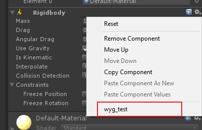
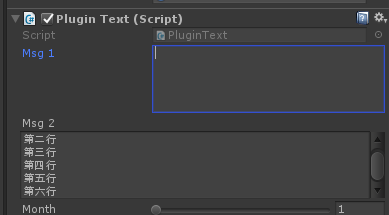
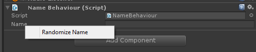
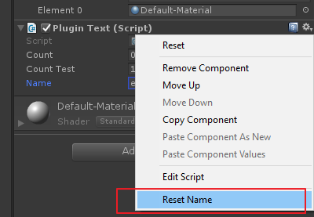

Unity3D编辑器插件扩展和组件扩展
1. 插件扩展
1.1. 命名空间
|
|
1.2. 使用语法
|
|
语法说明
|
|
- path 是菜单路径；
- 一级菜单名称不支持中文
- $t 是一个快捷键实例，在路径后面接空格，然后加上快捷键表示，单纯的一个按键快捷键按键字符前带下划线。该项非必需
%表示ctrl#表示shift&表示alt
- Is 设置为true的时候，如果没有选中游戏对象，会显示不可用状态，该选项非必需
- Priority 是优先级，数值越小优先级越高，非必需，其默认值为1000。
下面表示快捷键为”ctrl+h” 的实例。
|
|
1.3. Selection类
https://docs.unity3d.com/ScriptReference/Selection.html
1.3.1. 获取选中物体
Selection.Objects可以获得选中的物品。
1.3.2. 获取选中目录
|
|
1.4. 给控件添加右上角齿轮菜单增加功能
|
|
- CONTEXT 为固定写法；
- Rigidbody 是控件名称，可以修改为其他控件；
- 我使用中文的时候不知道为什么没有显示出来。

1.5. 弹窗
编辑器的弹窗类需要继承EditorWindow。
使用方法与GUI的使用方法基本一致，有Init，Awake，OnGUI等函数。
|
|
2. 组件属性展示
以下效果都是组件的显示，所以是属于using UnityEngine;的。
2.1. Range
可以将数值的展示效果变成滑动条效果。
|
|

2.3. ContextMenuItem/ContextMenu
添加右键小菜单，添加一些小功能。
|
|

还有一个ContextMenu的特性，用法类似。
|
|

2.4. ColorUsage
设置颜色选择器。
|
|